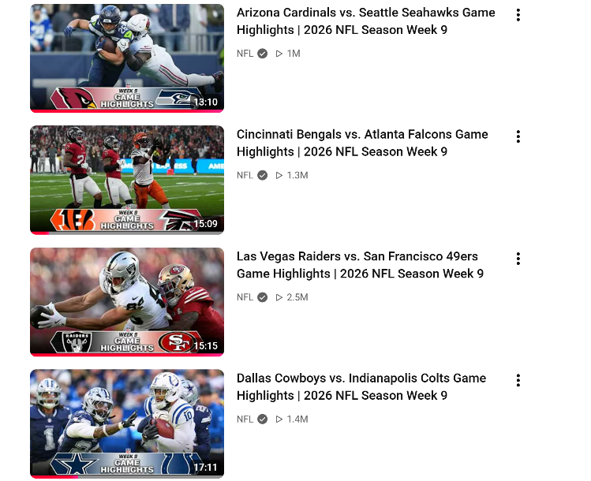

01 / SPORTS4 videos
A strong NFL interest

Screenshot 1 · Four different matchups, all from the NFL channel.
I watched highlights involving several teams, including the Cardinals and Seahawks, and the Cowboys and Colts. This is the clearest repeated interest in my sample.
My interpretation
This could encourage more football recommendations. However, watching multiple teams does not establish loyalty to one team, hostility toward rival fans, or rejection of opposing opinions.